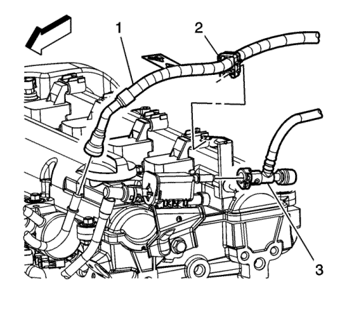

Sustitución del conjunto del tubo de distribución de los inyectores de combustible — LE5 o LE9
Procedimiento de desmontaje
- Despresurice el sistema de combustible. Consultar Descarga de la presión del combustible : Sin CH 48027-100 → CH 48027-100 .
- Desconecte el cable de batería negativo. Consultar Desconexión y conexión del cable de batería negativo .
- Retire el conducto de salida del purificador de aire. Consultar Sustitución del conducto de salida del filtro de aire : LE5 o LE9 .
- Desmonte la cubierta del colector de admisión. Consultar Sustitución de la cubierta del colector de admisión .

- Desconecte el acoplamiento rápido de la tubería de alimentación de combustible (1) del tubo de distribución de combustible. Consultar Reparación del acoplamiento rápido con collar metálico .
- Desenchufe el conector eléctrico del mazo de cables del motor del sensor de presión absoluta del colector (MAP).
- Desenchufe el conector eléctrico del mazo de cables del inyector de combustible de conector eléctrico del mazo de cables del motor.

- Extraiga los pernos del conjunto del carril de inyección de combustible.
Nota: Tenga cuidado al extraer el conjunto del tubo de distribución de combustible para la inyección de combustible para evitar daños en las puntas de pulverización de los inyectores de combustible.
- Tire del conjunto del tubo de distribución del combustible del inyector de combustible hacia atrás y hacia arriba para liberar los inyectores de combustible de las bocas de la culata.
- Desmonte el conjunto del carril de inyección de combustible.

Nota: Las puntas de pulverización de los inyectores de aceite pueden estar ubicadas en los inyectores de combustible o pueden encontrarse en las bocas de la culata. En cualquier caso, asegúrese de que las 4 puntas de pulverización de los inyectores de combustible se extraen y desechan.
- Retire y deseche las puntas de pulverización de los inyectores de combustible.
- Desenchufe los conectores eléctricos del mazo de cables de los inyectores de combustible.
- Retire los clips del mazo de cables del inyector de combustible del conjunto del tubo de distribución de combustible de la inyección de combustible.
- Retire el mazo de cables del inyector de combustible del conjunto del tubo de distribución de combustible de la inyección de combustible.
- Si fuera necesario, desmonte los inyectores de combustible. Consultar Sustitución del inyector de combustible .
Procedimiento de montaje
Nota: Si el conjunto del tubo de distribución de combustible y los inyectores de combustible se desmontaron y volvieron a instalar sin separarlos, instale solamente NUEVAS juntas tóricas inferiores. Si el conjunto del tubo de distribucion de combustible para inyección de combustible fue sustituido, instale NUEVAS juntas tóricas superiores e inferiores.
- Si fuera necesario, monte los inyectores de combustible. Consultar Sustitución del inyector de combustible .
- Monte el mazo de cables del inyector de combustible en el conjunto del tubo de distribución de combustible de la inyección de combustible.
- Monte los clips del mazo de cables del inyector de combustible en el conjunto del tubo de distribución de combustible de la inyección de combustible.
- Enchufe los conectores eléctricos del mazo de cables en los inyectores de combustible.
- Lubrique las NUEVAS puntas de pulverización de los inyectores de combustible con aceite de motor limpio.
- Monte las NUEVAS puntas de pulverización de los inyectores de combustible en las bocas de la culata.
- Lubrique con aceite de motor limpio las juntas tóricas del inyector de combustible.
- Con los inyectores de combustible colocados mirando hacia abajo, baje los inyectores de combustible hasta las bocas de la culata.
- Presione habia abajo con cuidado sobre el conjunto del tubo de distribución de combustible del inyector de combustible para asentar totalmente los inyectores de combustible en las bocas de la culata.
Precaución: Consulte Precaución con las fijaciones en la sección Prólogo
- Coloque los pernos del conjunto del tubo de distribución de combustible del inyector de combustible.
Apretar
Apriete los tornillos a 10 N·m (89 lb in).
- Enchufe el conector eléctrico del mazo de cables del inyector de combustible al conector eléctrico del mazo de cables del motor.
- Enchufe el conector eléctrico del mazo de cables del motor al sensor de presión absoluta del colector (MAP).
- Conecte el acoplamiento rápido de la tubería de alimentación de combustible (1) al tubo de distribución de combustible. Consultar Reparación del acoplamiento rápido con collar metálico .
- Monte la cubierta del colector de admisión . Consultar Sustitución de la cubierta del colector de admisión .
- Monte el conducto de salida del filtro de aire. Consultar Sustitución del conducto de salida del filtro de aire : LE5 o LE9 .
- Conecte el cable negativo de la batería. Consultar Desconexión y conexión del cable de batería negativo .
- Compruebe si existen pérdidas de combustible con el procedimiento siguiente:
| 17.1. | Conecte el encendido, con el motor desconectado durante 2 segundos. |
| 17.2. | Gire la llave de contacto a la posición de desactivado durante 10 segundos. |
| 17.3. | Gire el interruptor de encendido a ON. |
| 17.4. | Compruebe si existen pérdidas de combustible. |
| © Copyright Chevrolet Europe. All rights reserved |